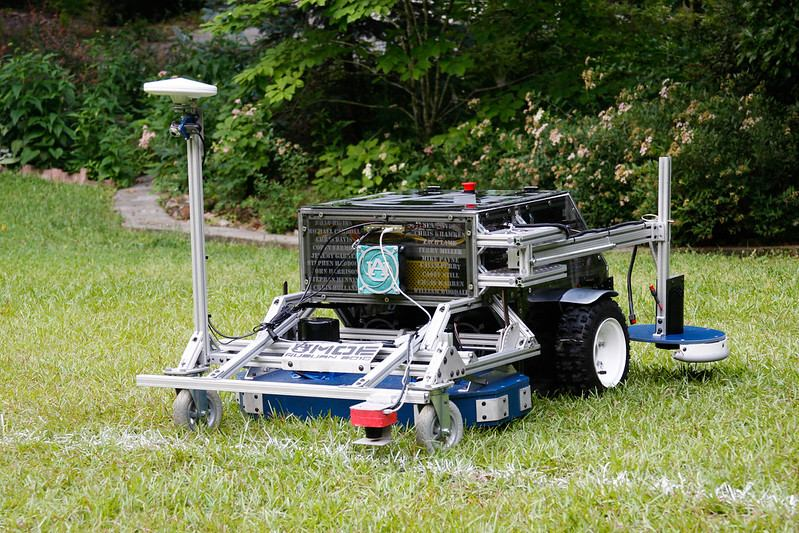

Autonomous
Robotic Lawnmower
A multidisciplinary senior project between mechanical, electrical, and software engineering undergraduates spanning three semesters. The end product — documentation and lawnmower — was entered into the 2010 ION Robotic Lawnmower Competition in Beavercreek, Ohio, placing 3rd overall. The objective was to develop, build, and operate an autonomous lawnmower utilizing the science of navigation to rapidly and accurately mow a field of grass. Object detection and avoidance included both static obstacles such as a flower bed, and dynamic obstacles including a remote-controlled dog.
The project spanned three full semesters — an unusually long timeline for a senior capstone that reflected the complexity of integrating GPS navigation, autonomous mowing logic, and dynamic obstacle avoidance. The team submitted full design documentation alongside the physical machine as part of the competition requirements.